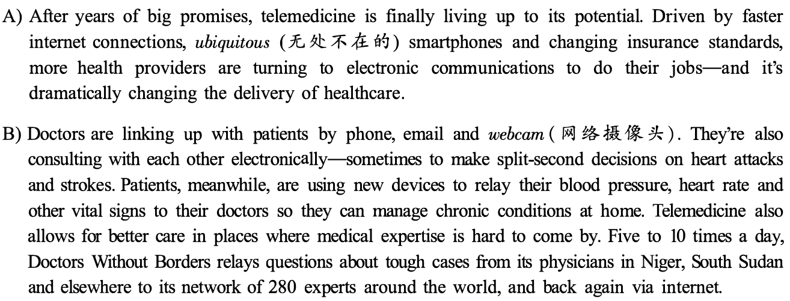
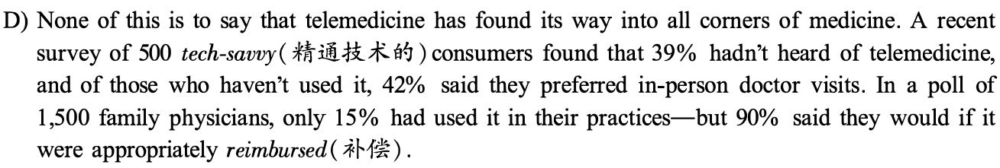
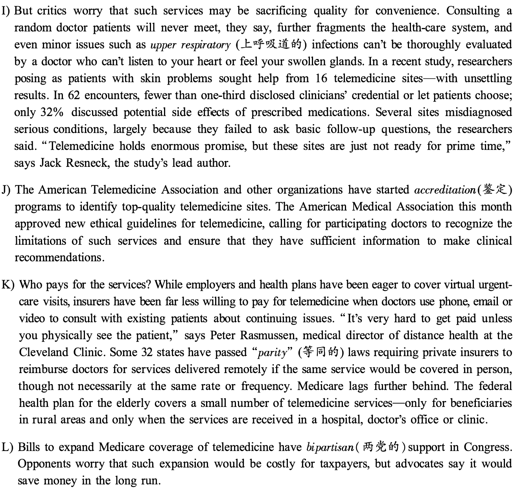
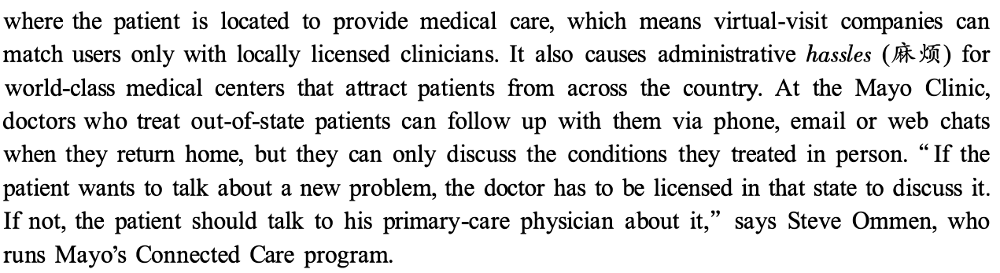
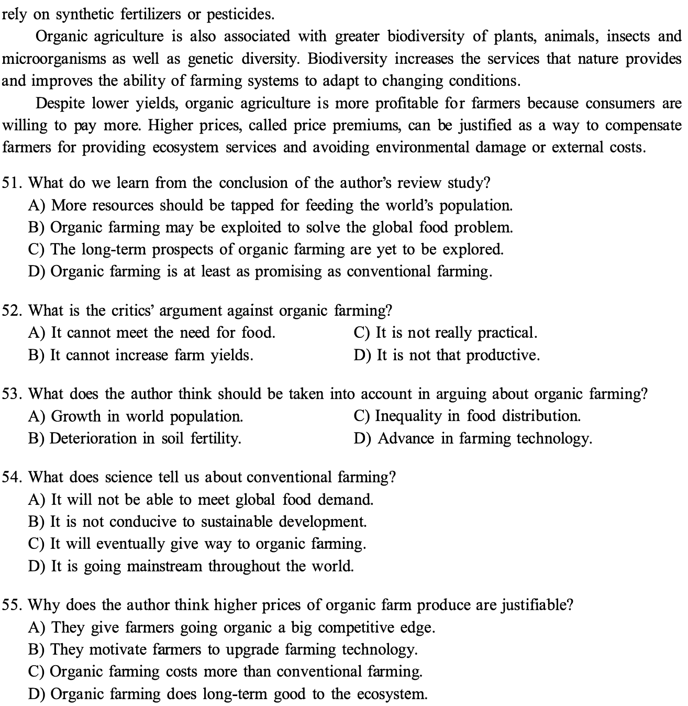
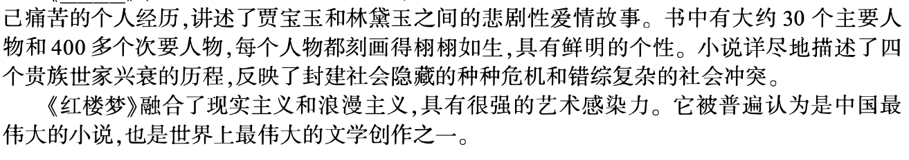
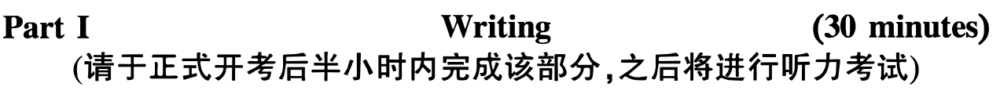
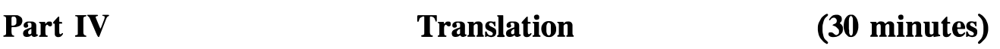

本页部分文字层异常，已保留原图文字区域；这些区域随窗口缩放，暂不能重新换行或复制。
2020年9月英语六级考试试题第2、3套
Part II Listening Comprehension (30 minutes)

Part III Reading Comprehension ( 40 minutes)
Section A
Directions : In this section , there is a passage with ten blanks. You are required to select one word for each blank from a list of choices given in a word bank following the passage. Read the
passage through carefully before making your choices. Each choice in the bank is identified
by a letter. Please mark the corresponding letter for each item on Answer Sheet 2 with a single line through the centre. You may not use any of the words in the bank more than once.
It was perhaps when my parents-who also happen to be my housemates-left to go travelling for a couple of months recently that it 26 on me why I had not yet left the family home.
It wasn't that I relied on them for 27 reasons, or to keep my life in order, or to ease the chaos of the home. These days, I rely on them for their company.
I missed coming home and talking about my day at work, and I missed being able to read their faces and sense how their day was. I missed having unique 28 into tiny details that make a life.
While the conversation about young adults staying longer at home is 29 by talk of laziness, of dependence, of an inability for young people to pull themselves together, 30 do we talk of the way, in my case at least, my relationship with my parents has 3 1 strengthened the longer we have lived together.
Over the years the power dynamic has changed and is no longer defined by one being the giver and another, the taker. So, what does this say for our relationships within the family home?
According to psychologist Sabina Read, there are " some very positive possible 32 when adult children share the family home" , noting the " parent-child relationship may indeed strengthen and mature" in the process.
But, she notes, a strong 33 doesn't simply come with time. " The many changing factors of the relationship need to be acknowledged, rather than hoping that the mere passage of time will 34 connect parents to their adult children. It's important to acknowledge that the relationship parameters have changed to avoid falling back into 35 from the teen years."
本页部分文字层异常，已保留原图文字区域；这些区域随窗口缩放，暂不能重新换行或复制。
Section B
Directions : In this section , you are going to read a passage with ten statements attached to it. Each
statement contains information given in one of the paragraphs. Identify the paragraph from
which the information is derived. You may choose a paragraph more than once. Each
paragraph is marked with a letter. Answer the questions by marking the corresponding letter
on Answer Sheet 2. How Telemedicine Is Transforming Healthcare

C) As a measure of how rapidly telemedicine is spreading, consider: More than 1 5 million Americans received some kind of medical care remotely last year, according to the American Telemedicine Association, a trade group, which expects those numbers to grow by 30% this year.

E) What's more, for all the rapid growth, significant questions and challenges remain. Rules defining and regulating telemedicine differ widely from state to state. Physicians groups are issuing different guidelines about what care they consider appropriate to deliver and in what form.
F) Some critics also question whether the quality of care is keeping up with the rapid expansion of telemedicine. And there's the question of what services physicians should be paid for: Insurance coverage varies from health plan to health plan, and a big federal plan covers only a narrow range of services. Telemedicine's future will depend on how-and whether-regulators, providers, payers and patients can address these challenges. Here's a closer look at some of these issues:
G) Do patients trade quality for convenience? The fastest-growing services in telemedicine connect consumers with clinicians they've never met for a phone, video or email visit-on-demand, 24/7. Typically, these are for nonemergency issues such as colds, flu, ear-aches and skin rashes, and they cost around $ 45, compared with approximately $ 1 00 at a doctor's office, $ 1 60 at an urgent-care clinic or $ 750 and up at an emergency room.
本页部分文字层异常，已保留原图文字区域；这些区域随窗口缩放，暂不能重新换行或复制。
H) Many health plans and employers have rushed to offer the services and promote them as a convenient way for plan members to get medical care without leaving home or work. Nearly three-quarters of large employers will offer virtual doctor visits as a benefit to employees this year, up from 48% last year. Web companies such as Teladoc and American Well are expected to host some 1 .2 million such virtual doctor visits this year, up 20% from last year, according to the American Telemedicine Association.

M) Experts say more hospitals are likely to invest in telemedicine systems as they move away from fee-for-service payments and into managed-care-type contracts that give them a set fee to provide care for patients and allow them to keep any savings they achieve.
N) Is the state-by-state regulatory system outdated? Historically, regulation of medicine has been left to individual states. But some industry members contend that having 50 different sets of rules, licensing fees and even definitions of " medical practice " makes less sense in the era of telemedicine and is hampering its growth. Currently, doctors must have a valid license in the state
本页部分文字层异常，已保留原图文字区域；这些区域随窗口缩放，暂不能重新换行或复制。

0) To date, 1 7 states have joined a compact that will allow a doctor licensed in one member state to
quickly obtain a license in another. While welcoming the move, some telemedicine advocates would prefer states to automatically honor one another's licenses, as they do with drivers' licenses. But states aren't likely to surrender control of medical practice, and most are considering new regulations. This year, more than 200 telemedicine-related bills have been introduced in 42 states, many regarding what services Medicaid will cover and whether payers should reimburse for remote patient monitoring. " A lot of states are still trying to define telemedicine," says Lisa Robbin, chief advocacy officer for the Federation of State Medical Boards.
36. An overwhehning majority of family physicians are willing to use telemedicine if they are duly paid.
3 7. Many employers are eager to provide telemedicine service as a benefit to their employees because of its convenience.
38. Different states have markedly different regulations for telemedicine.
39. With telemedicine, patients in regions short of professional medical service are able to receive
better medical care.
40. Unlike employers and health plans, insurers have been rather reluctant to pay for some
telemedicine services. 4 1 . Some supporters of telemedicine hope states will accept each other's medical practice licenses as valid. ---
42. The fastest growing area for telemedicine services is for lesser health problems.
43. As telemedicine spreads quickly, some of its opponents doubt whether its service quality can be
guaranteed.
44. The results obtained by researchers who pretended to be patients seeking help from telemedicine
providers are disturbing.
45. Some people argue that the fact that different states have different regulations concerning medical
services hinders the development of telemedicine.
Section C
Directions : There are 2 passages in this section. Each passage is followed by some questions or
unfinished statements. For each of them there are four choices marked A ) , B ) , C) and
D ) . You should decide on the best choice and mark the corresponding letter on Answer
Sheet 2 with a single line through the centre.
Passage One
Questions 46 to 50 are based on the following passage.
Danielle Steel, the 71-year-old romance novelist is notoriously productive, having published 179 books at a rate of up to seven a year. But a passing reference in a recent profile by Glamour magazine to her 20-hour workdays prompted an outpouring of admiration.
Steel has given that 20-hour figure when describing her " exhausting" process in the past: " I start the book and don't leave my desk until the first draft is finished." She goes from bed, to desk, to bath, to bed, avoiding all contact aside from phone calls with her nine children. " I don't comb my hair for weeks," she says. Meals are brought to her desk, where she types until her fingers swell and her nails bleed.
The business news website Quartz held Steel up as an inspiration, writing that if only we all followed her " actually extremely liberating" example of industrious sleeplessness, we would be quick to see results.
Well, indeed. With research results showing the cumulative effects of sleep loss and its impact on productivity, doubt has been voiced about the accuracy of Steel's self-assessment. Her output may be undeniable, but sceptics have suggested that she is guilty of erasing the role of ghostwriters ( 1-\.flA.) at worst, gross exaggeration at best.
Steel says working 20 hours a day is " pretty brutal physically." But is it even possible? " No," says Maryanne Taylor of the Sleep Works. While you could work that long, the impact on productivity would make it hardly worthwhile. If Steel was routinely sleeping for four hours a night, she would be drastically underestimating the negative impact, says Alison Gardiner, founder of the sleep improvement programme Sleepstation. " It's akin to being drunk."
It's possible that Steel is exaggerating the demands of her schedule. Self-imposed sleeplessness has " become a bit of a status symbol" , says Taylor, a misguided measure to prove how powerful and productive you are. Margaret Thatcher was also said to get by on four hours a night, while the 1 30-hour work weeks endured by tech heads has been held up as key to their success.
That is starting to change with increased awareness of the importance of sleep for mental health. " People are starting to realise that sleep should not be something that you fit in between everything else," says Taylor.
But it is possible-if statistically extremely unlikely-that Steel could be born a " short sleeper" with an unusual body clock, says sleep expert Dr. Sophie Bostock. " It's probably present in fewer than 1 % of the population."
Even if Steel does happen to be among that tiny minority, says Bostock, it's " pretty irresponsible" to suggest that 20-hour days are simply a question of discipline for the rest of us.
46. What do we learn from the passage about Glamour magazine readers?
47. What did the business news website Quartz say about Danielle Steel?
48. What do sceptics think of Danielle Steel's work schedule claims?
49. What does Maryanne Taylor think of self-imposed sleeplessness?
50. How does Dr. Sophie Bostock look at the 20-hour daily work schedule?
Passage Two
Questions 51 to 55 are based on the following passage.
Organic agriculture is a relatively untapped resource for feeding the Earth's population, especially in the face of climate change and other global challenges. That's the conclusion I reached in reviewing 40 years of science comparing the long-term prospects of organic and conventional farming.
The review study, " Organic Agriculture in the 21 st Century," is featured as the cover story for the February issue of the journal Nature Plants. It is the first to compare organic and conventional agriculture across the main goals of sustainability identified by the National Academy of Sciences: productivity, economics and environment.
Critics have long argued that organic agriculture is inefficient, requiring more land to yield the same amount of food. It's true that organic farming produces lower yields, averaging 10 to 20 percent less than conventional. Advocates contend that the environmental advantages of organic agriculture far outweigh the lower yields, and that increasing research and breeding resources for organic systems would reduce the yield gap. Sometimes excluded from these arguments is the fact that we already produce enough food to more than feed the world's 7.4 billion people but do not provide adequate access to all individuals.
In some cases, organic yields can be higher than conventional. For example, in severe drought conditions, which are expected to increase with climate change in many areas, organic farms can produce as good, if not better, yields because of the higher water-holding capacity of organically farmed soils.
What science does tell us is that mainstream conventional farming systems have provided growing supplies of food and other products but often at the expense of other sustainability goals.
Conventional agriculture may produce more food, but it often comes at a cost to the environment. Biodiversity loss, environmental degradation, and severe impacts on ecosystem services have not only accompanied conventional farming systems but have often extended well beyond their field boundaries. With organic agriculture, environmental costs tend to be lower and the benefits greater.
Overall, organic farms tend to store more soil carbon, have better soil quality and reduce soil erosion compared to their conventional counterparts. Organic agriculture also creates less soil and water pollution and lower greenhouse gas emissions. And it's more energy-efficient because it doesn't
本页部分文字层异常，已保留原图文字区域；这些区域随窗口缩放，暂不能重新换行或复制。

Part IV Translation (30 minutes)
Directions : For this part , you are allowed 30 minutes to translate a passage from Chinese into English. You should write your answer on Answer Sheet 2.
----

本页部分文字层异常，已保留原图文字区域；这些区域随窗口缩放，暂不能重新换行或复制。

Directions : For this part , you are allowed 30 minutes to write an essay on the saying " What is
worth doing is worth doing well. " You should write at least 150 words but no more
than 200 words.

Directions : For this part , you are allowed 30 minutes to write an essay on the saying " Wealth
of the mind is the only true wealth. " You should write at least 150 words but no
more than 200 words.

Directions : For this part , you are allowed 30 minutes to translate a passage from Chinese into
English. You should write your answer on Answer Sheet 2.